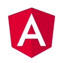
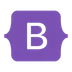
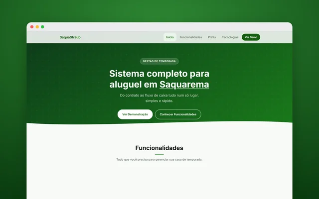
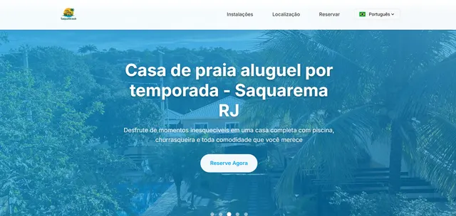

Analista de QA
Planejamento e execução de testes manuais, bug reports detalhados e validação de fluxos críticos em web, mobile e API.
Analista de QA · Desenvolvedor Fullstack
Encontro o bug antes do seu usuário. Testes minuciosos com o olhar de quem também desenvolve, do front ao back-end.
Sobre
Duas frentes que se completam: garantir a qualidade e construir o produto, sempre em times ágeis.
Planejamento e execução de testes manuais, bug reports detalhados e validação de fluxos críticos em web, mobile e API.
Aplicações web de ponta a ponta: interfaces responsivas, APIs em Node.js e banco MySQL, com atenção à experiência do usuário e a boas práticas de código.
Experiência em times Scrum e Kanban, com gestão de tarefas no Jira e no Taiga, controle de cronograma e colaboração próxima entre QA e desenvolvimento.
Trajetória
Da disciplina militar à qualidade de software, cada etapa somou ao que faço hoje.
Plataforma global de gestão de eventos. Executo testes manuais, identifico e reporto bugs, valido fluxos e apoio o time de desenvolvimento na qualidade das entregas.
Testes manuais em sistemas em desenvolvimento, com registro claro e preciso das falhas. Apoio ao time de front-end na correção de bugs e na construção de interfaces. Atuação em times ágeis (Scrum e Kanban) com Taiga, incluindo controle de horas e cronogramas.
Infraestrutura de redes: passagem de cabos, mapeamento de rede e instalação de roteadores. Suporte: gestão de servidores AD (Active Directory), DNS e virtualização VMware, manutenção de computadores e configuração de softwares.
Servi por 3 anos no Corpo de Fuzileiros Navais, atuando na Seção de Pessoal do Batalhão, onde fui responsável pelos soldados do setor. Levo dessa fase disciplina, organização e senso de responsabilidade.
Habilidades
O que uso para testar, construir e organizar o trabalho do time.
 MySQL
MySQL React
React
Angular TypeScript
TypeScript Tailwind
Tailwind
Bootstrap Jira
JiraProjetos
Projetos publicados, do layout ao back-end.
App de controle financeiro pessoal e em grupo: contas, cartões, recorrências, planejamento, previsão e orçamentos.
Visitar site
Sistema web de gestão com front-end em Vue.js, API em Node.js e banco MySQL.
Visitar site
Site de aluguel por temporada de uma casa de praia em Saquarema (RJ).
Visitar siteSite institucional para agência de turismo, com vitrine de destinos e pacotes.
Visitar siteContato
Projetos, parcerias ou uma boa conversa sobre qualidade de software e desenvolvimento. Me chama por e-mail ou WhatsApp.